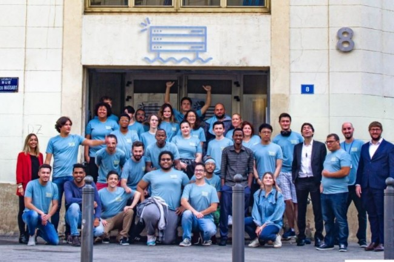

ACTUALITÉS
JUL l'a fait !! Il va remplir le Stade Vélodrome le 6 Juin 2022
Julien Marie connue sour le nom de JUL, un rappeur purement marseillais va performer au stade vélodrome le 6 Juin 2022, les Statistiques annonces guiché fermé pour sa performance
Reservez ici

La voie est libre : profitez de la Corniche piétonnisée ce dimanche 19 novembre
Le dispositif, qui fait la part belle aux promeneurs et aux mobilités douces, est de retour pour sa dernière édition de l'année 2023 . Lors de l'édition du mois d'octobre près de 30 000 Marseillaises et Marseillais sont venus profiter...
Plus d'infos

L'école la plateforme ce prepare a devenir le plus grand campus informatique de marseille.
Implantée à la Joliette depuis 2019, il annonçait en 2021 sa volonté de créer, pour 55 millions d’euros à l’époque, un immense campus de près de 25 000 m2 sur le périmètre d’Euroméditerranée 2. Le bâtiment doit s’élever au chemin de la Madrague-Ville, dans le quartier des Crottes (15e) à Marseille.
Plus d'infos

Nouveau : un marché alimentaire sur le Vieux-Port chaque dimanche matin
Depuis le 12 novembre , la Ville de Marseille installe un nouveau marché alimentaire tous les dimanches matin de 8h à 13h sur le Vieux-Port.
Ce marché inédit prend place quai de la Fraternité, de l'Ombrière à la Samaritaine et compte une trentaine d'étals...
Plus d'infos

Rue d'Aubagne : 5 ans après
Le 5 novembre 2018, huit Marseillais : Marie-Emmanuelle BLANC, Simona CAPRIGNANO, Taher HEFDI, Julien LALONDE, Fabien LAVIEILLE, Pape NIASSE, Ouloume SAID HASSANI et Mohamed Cherif ZEMAR – perdaient la vie dans les effondrements de deux immeubles de la rue d’Aubagne.
Plus d'infos

Nouveau : un marché alimentaire sur le Vieux-Port chaque dimanche matin
Inscrivez-vous à la 3e édition des Rencontres de l'Éducation populaire !
Inscrivez-vous ici

Profitez des bibliothèques gratuitement, toute l'année !
Plus d'infos

La Ville de Marseille s'associe à la "Journée nationale de la qualité de l'air"
Ce samedi 21 octobre, de 9h à 12h30, la Ville de Marseille vous convie au parc Longchamp pour l'opération "Mieux respirer à Marseille", axée autour de la participation citoyenne et de l'ambition "Marseille 2030 Objectif Climat".
Plus d'infos